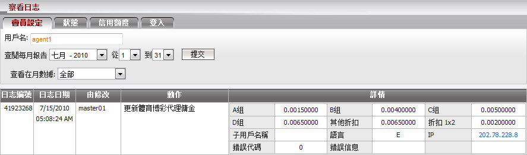
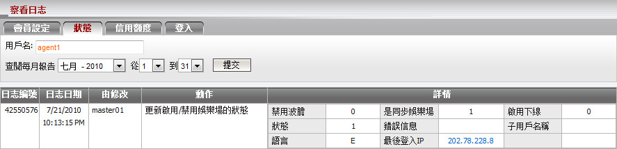
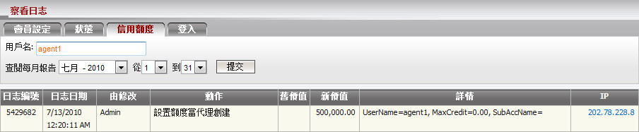
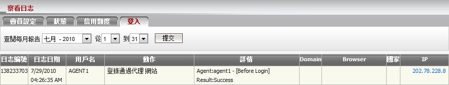
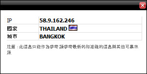

察看日志
此功能允許代理跟踪或追溯他的賬號和其下線的所有執行活動.
該功能位置:
功能支持:
登錄用戶可以選擇特定的日期範圍, 查看他自己/其所有下線甚至管理的執行操作的更新。
在一般情況下, 我們將在一年內提供並保留這些數據記錄。這些活動分為以下4類:
-
客戶設定: 包含所有日誌活動
- 創建新賬號/子賬號.
- 佣金設定.
- 投注設定.
- 佔成數設定.
- 客戶/子賬號信息.
- 密碼.
- 子賬號權限.
- 轉賬條件.
用戶可以根據日誌類型以篩選客戶設置日誌: 佔成數, 佣金, 投注設定及一般信息.

-
狀態: 包含所有日誌活動於
- 活躍/關閉/暫停.
- 允許/不允許優勝冠軍.
- 啟用/禁用狀態.


-
登入: 包含登入信息於
目前不支持查看會員的登入日誌數據.

IP信息:
當點擊任何IP 將出現一個彈出式的框架. 框架內包含屬於該IP的國家/城市.

IP信息
更多說明:
- 子賬號的權限設置如下:
- 隨著更新賬戶權限: 可查看日誌設置於會員設定/狀態/信用額度/登入.
- 沒有更新賬戶權限: 只可查看登入信息日誌.